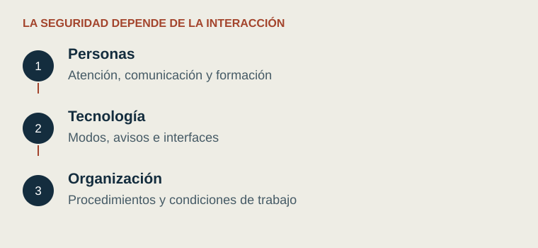

04 / Investigación y evidencia
Factor humano y sistemas aeronáuticos
Cómo se relacionan la atención, la comunicación y la automatización.

El factor humano estudia cómo las capacidades y limitaciones de las personas se relacionan con equipos, procedimientos, tareas y organizaciones. En aviación, esta perspectiva permite analizar por qué una acción puede resultar insegura y qué condiciones ayudan a prevenirla. La FAA (2017) propone formación adaptada a las necesidades de cada organización de mantenimiento; el objetivo no se limita a pedir más atención, sino a mejorar el desempeño dentro de condiciones reales de trabajo.
Personas y condiciones de trabajo
Un técnico puede conocer una tarea y aun así trabajar con información incompleta, interrupciones o recursos insuficientes. La FAA (2017) relaciona los factores humanos con el diseño y la evaluación de equipos, procedimientos, entornos y organización. Por tanto, revisar un error exige estudiar tanto la actuación individual como la manera en que se preparó y supervisó el trabajo.
Esta interpretación no elimina la responsabilidad profesional. Permite formular preguntas concretas: ¿la documentación estaba disponible?, ¿el personal había recibido formación?, ¿el relevo comunicó lo pendiente?, ¿existía una verificación adecuada? El equipo considera que estas preguntas producen medidas más útiles que explicar un suceso únicamente con la frase “fue un descuido”.
Fatiga comunicación y presión operativa
El material de la FAA conocido como Dirty Dozen identifica doce factores asociados a errores de mantenimiento: falta de comunicación, complacencia, falta de conocimientos, distracción, falta de trabajo en equipo, fatiga, falta de recursos, presión, falta de asertividad, estrés, falta de conciencia situacional y normas informales. La lista funciona como una guía para reconocer condiciones de riesgo; no constituye una clasificación automática de las causas de cada accidente (FAA, s. f.-a).
La comunicación insuficiente puede dejar una tarea sin confirmar, mientras la presión puede favorecer que se omitan comprobaciones. Frente a ello, la formación propone prácticas como utilizar listas y comunicar información relevante. La aplicación requiere comprobar que las medidas son adecuadas para la tarea, en lugar de asumir que entregar una lista o un cartel resuelve por sí solo el problema (FAA, s. f.-a).
Como ejemplo hipotético del equipo, un relevo de turno que informa solamente “el trabajo está casi terminado” deja dudas sobre inspecciones pendientes. Un registro que distingue lo realizado de lo aún no verificado ofrece una base más clara para continuar. El ejemplo ilustra la necesidad de trazabilidad; no describe un accidente documentado.
Coordinación y gestión de recursos
La gestión de recursos de la tripulación o CRM integra conciencia situacional, comunicación, trabajo en equipo, distribución de tareas y toma de decisiones dentro de procedimientos operacionales. La FAA (2004) presenta su entrenamiento como una actividad que debe practicarse, reforzarse y evaluarse. La coordinación permite contrastar información y advertir desviaciones antes de que se agraven.
La misma guía reconoce la necesidad de prevenir errores y también detectarlos y recuperarse de ellos. Esto resulta relevante porque un sistema que solo espera actuaciones perfectas puede dejar pocas oportunidades de corrección. Como interpretación del equipo, una confirmación cruzada funciona mejor cuando los participantes comprenden qué están verificando y pueden señalar discrepancias con claridad (FAA, 2004).
Automatización y supervisión de los sistemas
La interacción humana con la automatización ya se observa en el apartado de mitos: el piloto automático opera dentro de funciones y modos que la tripulación necesita comprender. El ejemplo del A220 documentado por Airbus (2023a) muestra que una selección involuntaria puede generar un estado diferente del previsto. Por eso, incorporar tecnología no elimina la necesidad de formación ni de revisar las interfaces y los procedimientos.
El equipo interpreta que la protección depende de que el personal identifique qué hace el sistema, qué información utiliza y cuándo requiere intervención. En una situación hipotética, una discrepancia entre la trayectoria esperada y la observada exige verificación; su respuesta concreta debe ajustarse al manual de la aeronave. Este trabajo explica el principio de supervisión, sin sustituir instrucciones operacionales.
Causse et al. (2025) estudiaron a veinte pilotos profesionales en seis escenarios de aterrizaje y tres niveles de automatización en un simulador de vuelo. En las condiciones evaluadas, una mayor automatización mejoró el desempeño y redujo la carga mental, pero se asoció con menor vigilancia de instrumentos primarios. Los resultados muestran un beneficio y una limitación simultáneos; no prueban que todos los pilotos reaccionen igual ni representan todas las fases del vuelo. Para el equipo, respaldan la necesidad de entrenar la supervisión activa, en lugar de considerar que una menor carga de trabajo garantiza por sí sola mayor atención.
La revisión de Sarter (2008) complementa ese resultado desde el estudio de los errores de modo. Identifica como factores relevantes la retroalimentación insuficiente, los modelos mentales inadecuados y la complejidad de los sistemas automatizados. Su contribución consiste en relacionar el problema con mejoras de diseño, entrenamiento y procedimientos. El contraste con el experimento de Causse et al. (2025) muestra dos niveles de evidencia: una revisión organiza explicaciones acumuladas, mientras un estudio experimental examina el comportamiento bajo condiciones delimitadas. Ambos apoyan evaluar conjuntamente la tecnología y la comprensión que el operador tiene de ella.
Vinculación con la ingeniería aeronáutica
Para la ingeniería aeronáutica, el análisis anterior relaciona decisiones de diseño y organización con la seguridad. Una interfaz comprensible, una tarea accesible y una verificación bien definida pueden facilitar el trabajo; su utilidad debe demostrarse en el contexto de aplicación. La formación sobre factores humanos aporta criterios para evaluar estas condiciones y no únicamente el conocimiento técnico de componentes (FAA, 2017).
La conexión entre los cuatro subtemas es directa: una herramienta sin control puede convertirse en FOD; los registros pueden ayudar a reconstruir un suceso; y una explicación rigurosa permite comunicar los hallazgos sin alimentar mitos. Como propuesta del equipo, la preparación profesional debe combinar conocimientos técnicos, comunicación y revisión crítica de procedimientos. Así se entiende la seguridad como una actividad compartida entre personas, sistemas y organizaciones.
Conclusión
El factor humano y los sistemas aeronáuticos deben estudiarse conjuntamente. Los documentos y artículos comparados muestran la importancia de la supervisión, la comunicación y la comprensión de los modos de automatización. La propuesta del equipo es evaluar el trabajo como una interacción entre personas, procedimientos y herramientas. Así se pueden formular mejoras concretas y distinguirlas de una explicación general basada únicamente en el descuido.
Las citas de este artículo se desarrollan en la bibliografía completa.
Aplica lo aprendido · 04
Una decisión con evidencia
Actividad local: no solicita nombre, correo ni almacena tus respuestas. Basada en las fuentes del artículo.